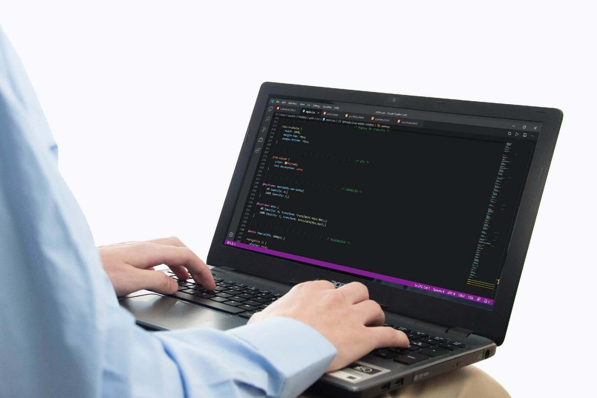

Trabalho Web Design - Douglas Krämer
Descrição do Projeto
O Projeto de Design Douglas Krämer se trata de um desenvolvimento inicial para a carreira profissional de Douglas Krämer. O objetivo do projeto é divulgar suas capacidades e habilidades na área de desenvolvimento web e programação front-end.
O projeto foi produzido com base em cursos on-line, focando no desenvolvimento básico de um site com as linguagens HTML, CSS e Javascript.
O design responsivo para dispositivos portáteis não foi deixado de fora, pois atende grande parte dos acessos ao site.
Conclusão do projeto: Fevereiro de 2020
Endereço web: douglaskramer.surge.sh
Fotografia: Gustavo Diehl - Studio i9 Fotografia e Vídeo
↩ Voltar ao Portfolio